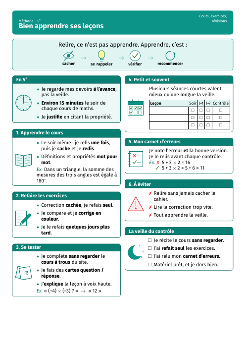

Méthode : bien apprendre ses leçons en 5èmeLa fiche de ton année, à imprimer et à garder dans le cahier.
Fiche 5ème (PDF, 1 page) La méthode en détail →
Contrôle commun · professeur (0)Déplier / replier
Visible seulement par le professeur connecté. Fichiers chiffrés : même mot de passe que la page admin.
Aucun contrôle commun pour le moment.
À venir
Les séquences de ce niveau seront bientôt en ligne.